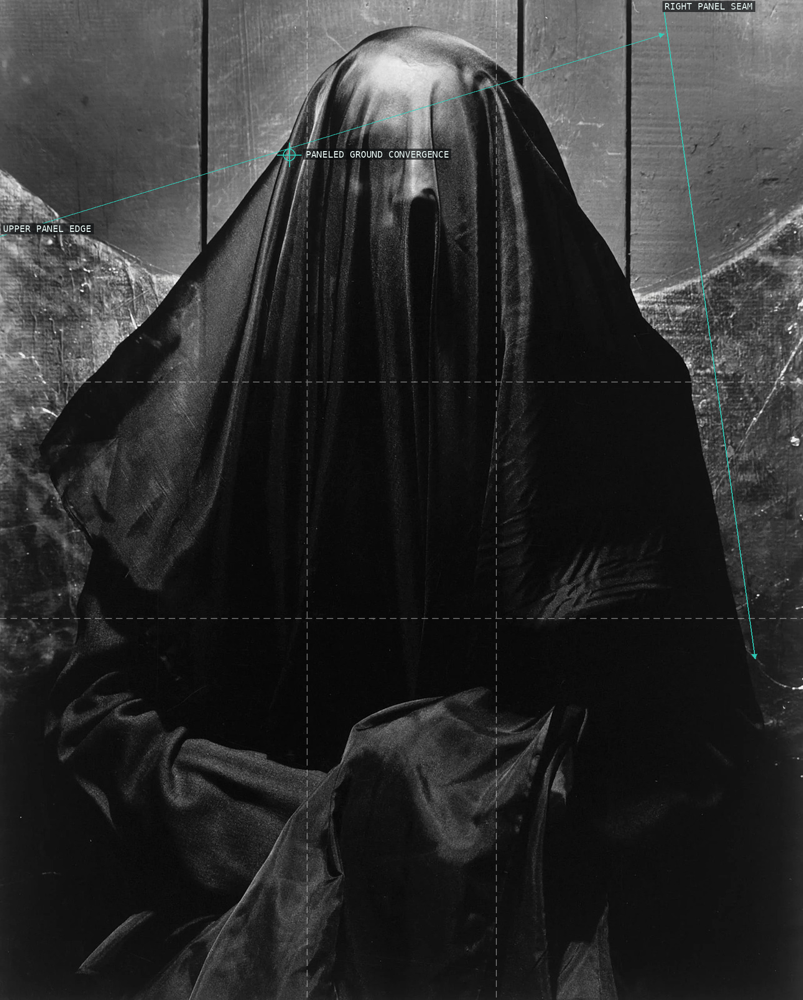
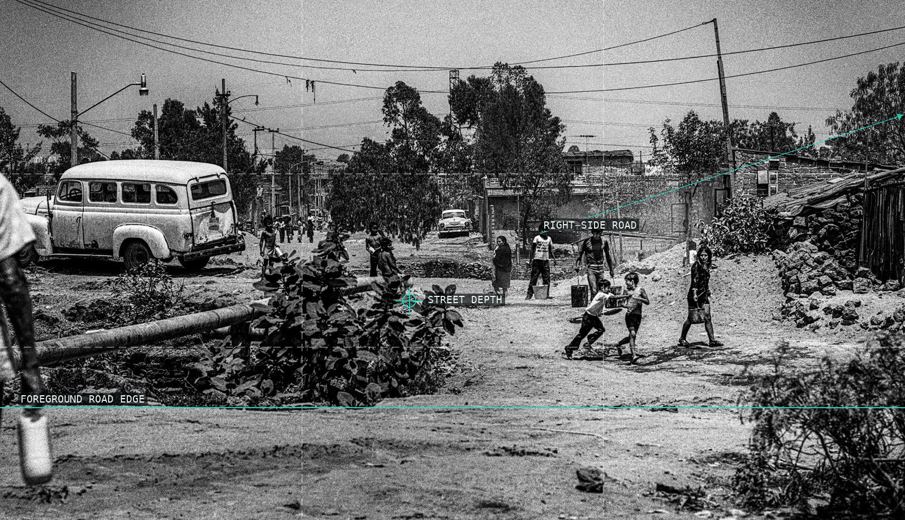
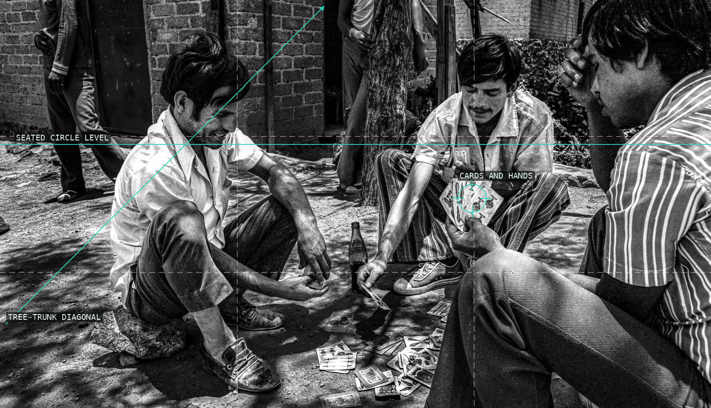
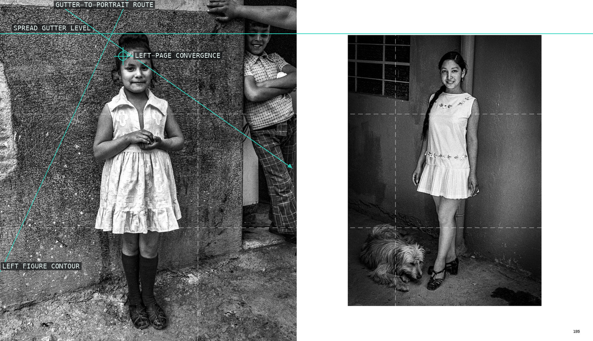
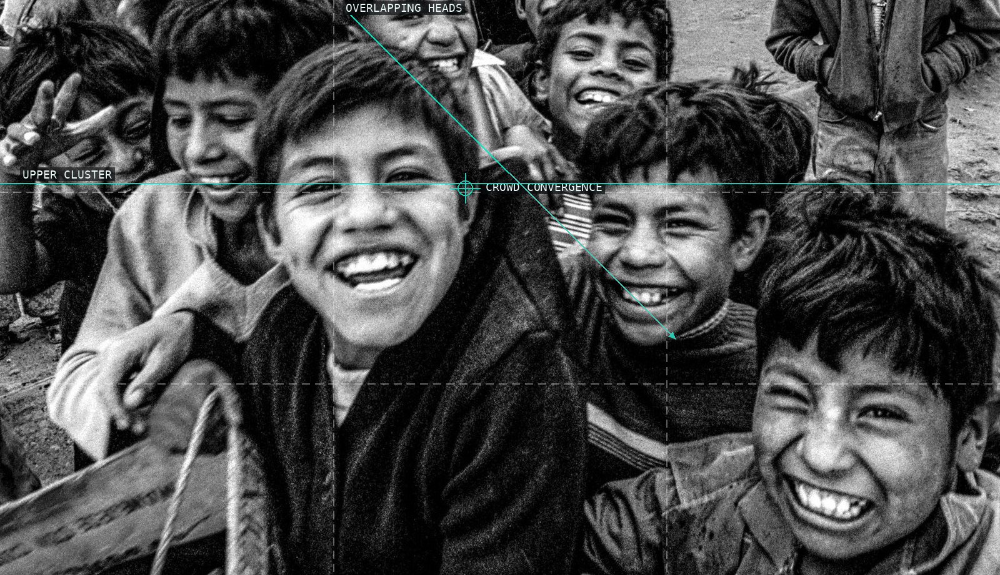
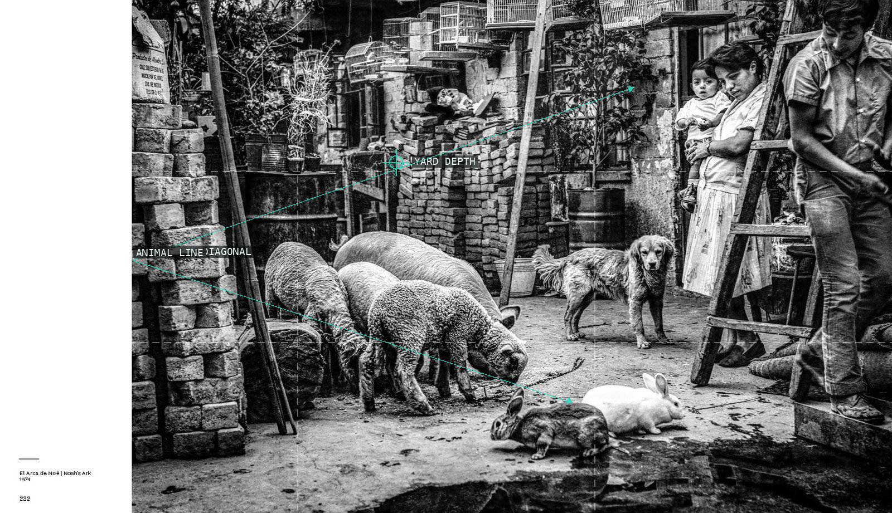
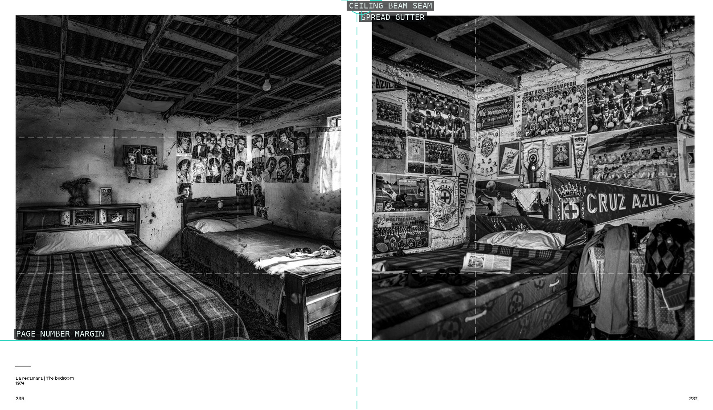
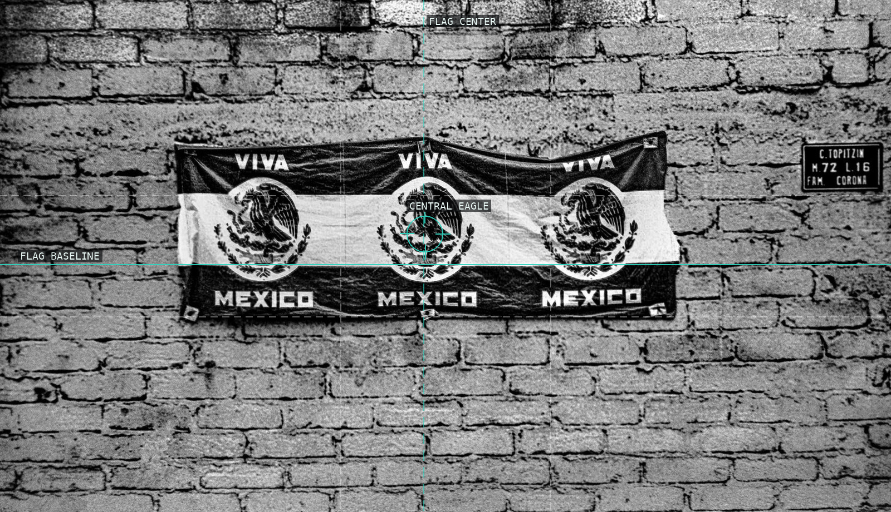
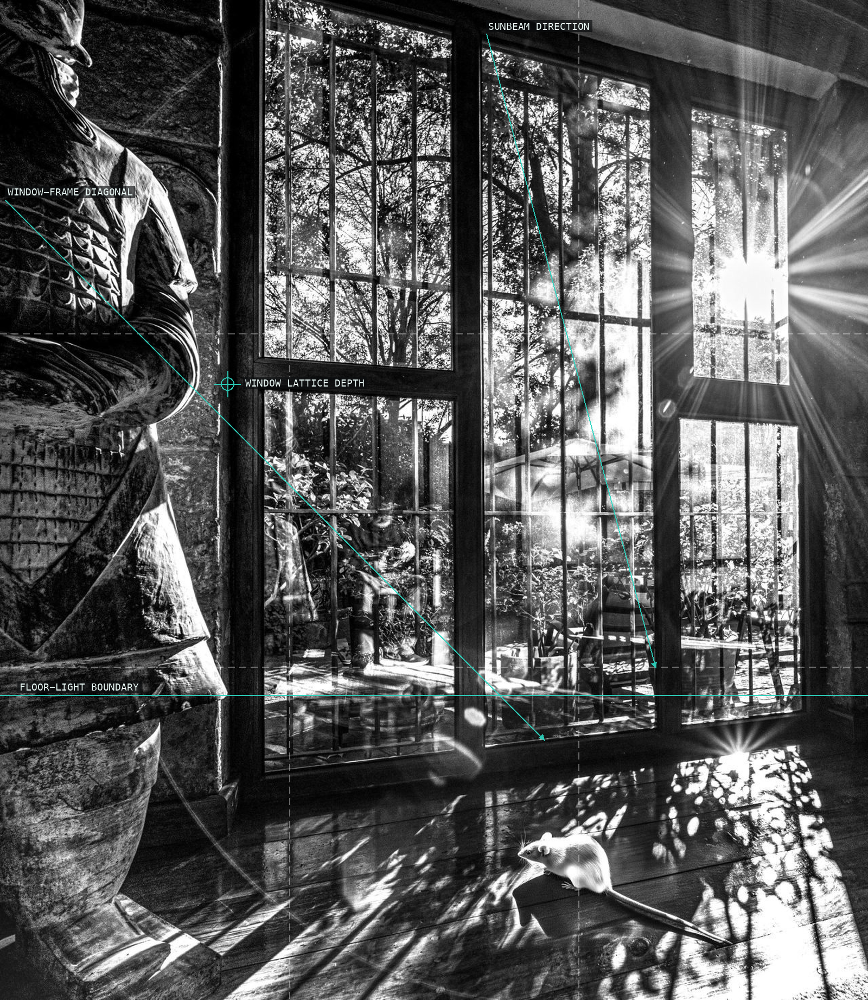
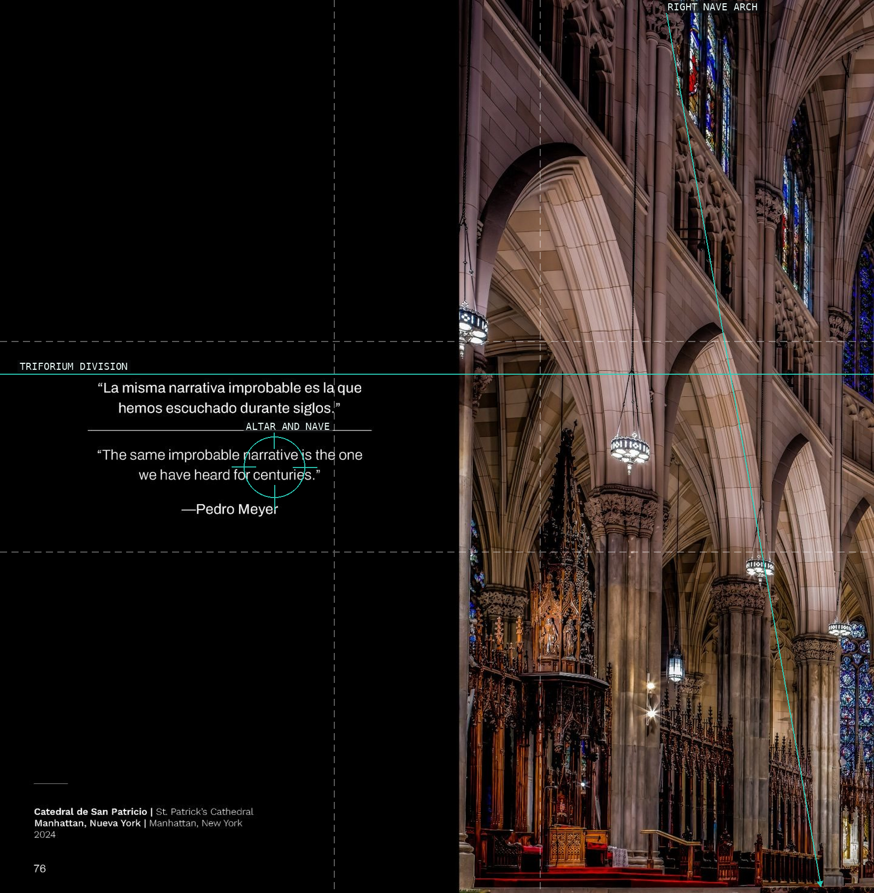

/* pedro-meyer - proofs */
10 plates. Deterministic overlays rendered by the composition-analysis skill.

01-el-velo-negro
The veiled figure is held against a set of converging, pale panel edges.

02-ajusco-street-and-bus
The bus anchors the near left while road and wires distribute the scene into depth.

03-ajusco-card-players
The card game is closed into a ring by bodies, hands, and the tree trunk.

04-ajusco-girls
The gutter turns two separate portraits into a paired, alternating gaze structure.

05-ajusco-laundry
Children overlap from every edge, with one central face interrupting the crowd.

06-ajusco-men-portrait-pair
Animals, masonry, and family members stack a domestic yard from front to back.

07-ajusco-children
The gutter divides paired bedrooms while beds and wall inventories make the rooms comparable.

08-ajusco-bedroom-pair
The repeated emblems make a small flag read as a nearly symmetrical graphic against brickwork.

09-virgilio-sunlit-room
Window bars and raking light organize the room around the small mouse on the floor.

10-virgilio-parade
Nested arches and stained-glass verticals turn the cathedral aisle into a measured ascent.